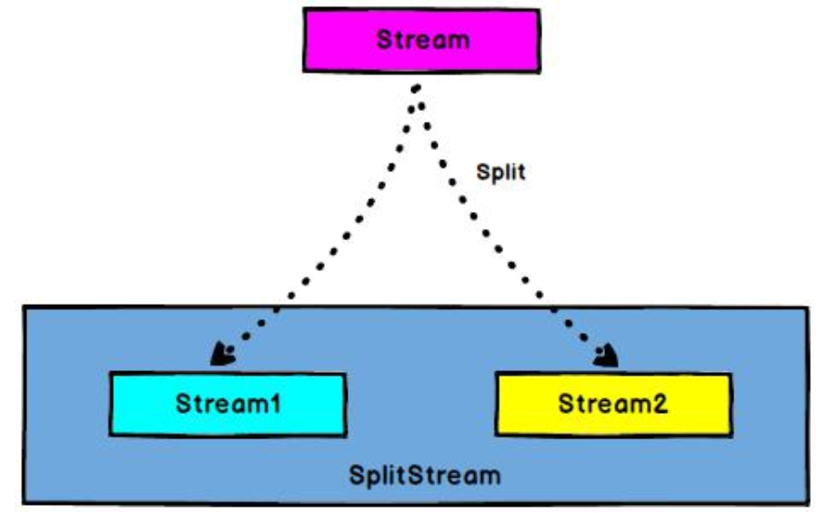
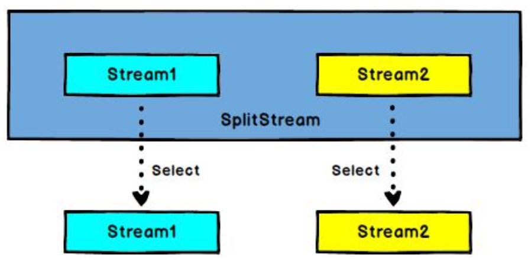
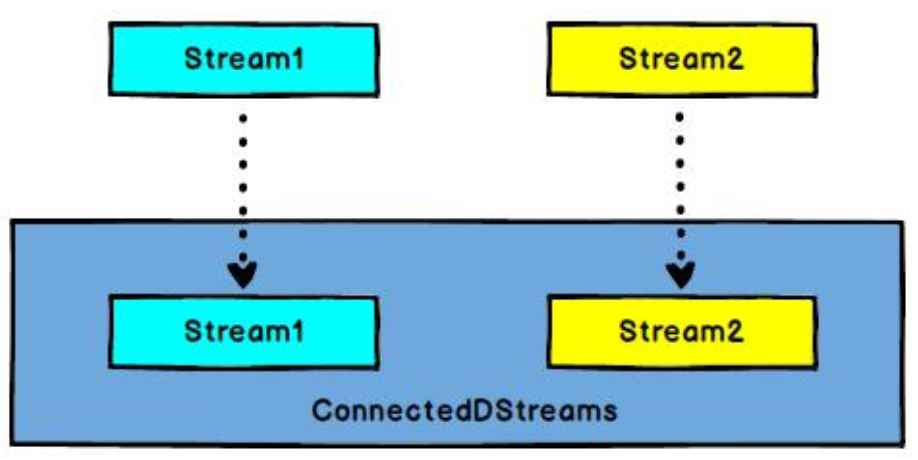
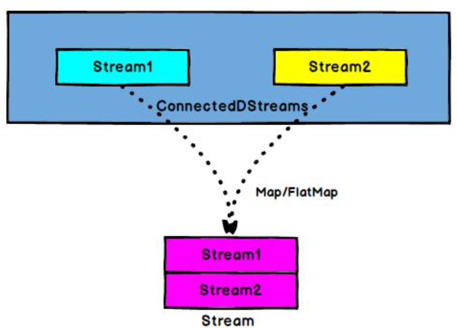
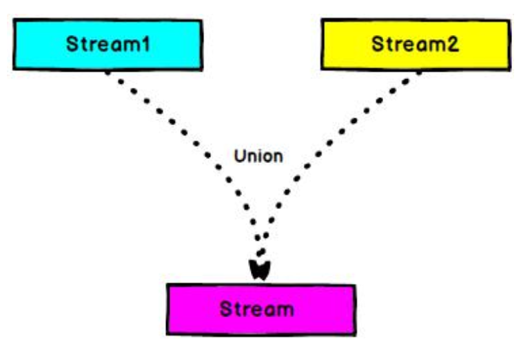
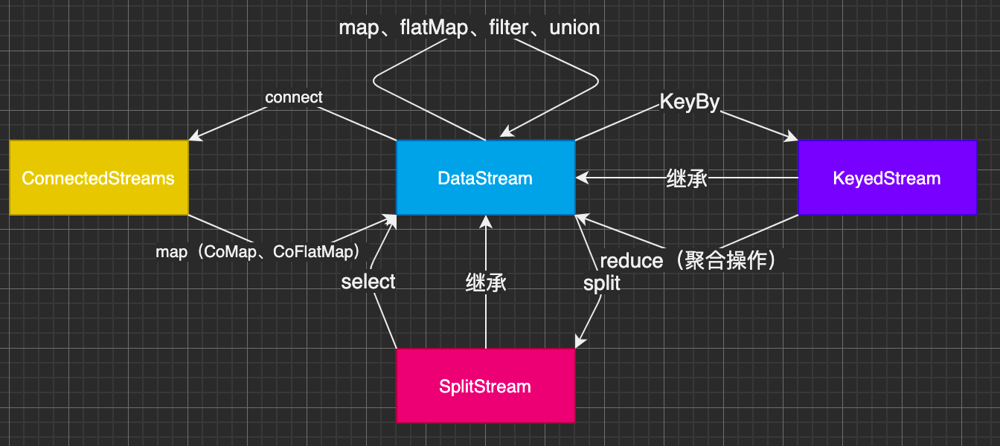
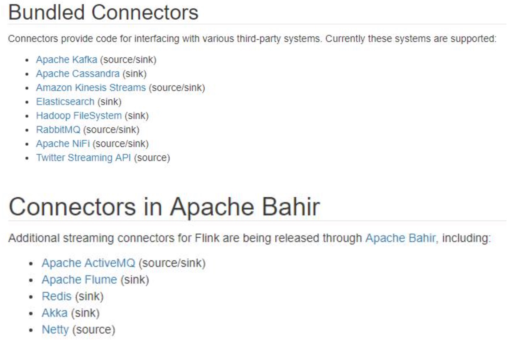

Flink
Flink 流处理 API
source：读取数据源
transform：转换计算
sink：输出
Environment
getExecutionEnvironment
创建一个执行环境，表示当前执行程序的上下文。如果程序是独立调用的，则此方法返回本地执行环境；如果从命令行客户端调用程序以提交到集群，则此方法返回此集群的执行环境，也就是说，getExecutionEnvironment 会根据查询运行的方式决定返回什么样的运行环境，是最常用的一种创建执行环境的方式。
ExecutionEnvironment env = ExecutionEnvironment.getExecutionEnvironment();
StreamExecutionEnvironment env = StreamExecutionEnvironment.getExecutionEnvironment();如果没有设置并行度，会以 flink-conf.yaml 中的配置为准，默认是 1。
createLocalEnvironment
返回本地执行环境，需要在调用时指定默认的并行度。
LocalStreamEnvironment env = StreamExecutionEnvironment.createLocalEnvironment(1);createRemoteEnvironment
返回集群执行环境，将 Jar 提交到远程服务器。需要在调用时指定 JobManager 的 IP 和端口号，并指定要在集群中运行的 Jar 包。
StreamExecutionEnvironment env = StreamExecutionEnvironment.createRemoteEnvironment("jobmanage-hostname", 6123, "YOURPATH//wordcount.jar");注：其实 getExecutionEnvironment 相当于对后两种创建环境的方式进行了封装，根据运行方式来创建环境。
Source
从集合读取数据
package com.swenchao.apitest.source;
import com.swenchao.apitest.beans.SensorReading;
import org.apache.flink.streaming.api.datastream.DataStream;
import org.apache.flink.streaming.api.environment.StreamExecutionEnvironment;
import java.util.Arrays;
import java.util.List;
public class SourceTest1_Collection {
public static void main(String[] args) throws Exception {
// 创建执行环境
StreamExecutionEnvironment env = StreamExecutionEnvironment.getExecutionEnvironment();
// 设置并行度是1，保证读取顺序跟存的时候顺序一样
env.setParallelism(1);
// 从集合中读取数据
List<SensorReading> dataStream = Arrays.asList(new SensorReading("sensor_1", 1547718199L, 35.8),
new SensorReading("sensor_6", 1547718201L, 15.4),
new SensorReading("sensor_7", 1547718202L, 6.7),
new SensorReading("sensor_10", 1547718205L, 38.1));
DataStream<SensorReading> dataStreamSource = env.fromCollection(dataStream);
dataStreamSource.print("data");
env.execute();
}
}其中 SensorReading 为自定义传感器类
从文件读取数据
DataStream<String> dataStream = env.readTextFile("src/main/resources/sensor.txt");以 kafka 消息队列的数据作为来源 需要引入 kafka 连接器的依赖:
【pom.xml】添加依赖
<!-- https://mvnrepository.com/artifact/org.apache.flink/flink-connector-kafka-0.11 -->
<dependency>
<groupId>org.apache.flink</groupId>
<artifactId>flink-connector-kafka-0.11_2.12</artifactId>
<version>1.10.1</version>
</dependency>【SourceTest3_Kafka.java】代码
package com.swenchao.apitest.source;
import org.apache.flink.api.common.serialization.SimpleStringSchema;
import org.apache.flink.streaming.api.datastream.DataStream;
import org.apache.flink.streaming.api.environment.StreamExecutionEnvironment;
import org.apache.flink.streaming.connectors.kafka.FlinkKafkaConsumer011;
import java.util.Properties;
/**
* @author : swenchao
* create at: 2021/1/12 7:34 下午
* @description: 从 Kafka 中读取数据
*/
public class SourceTest3_Kafka {
public static void main(String[] args) throws Exception{
StreamExecutionEnvironment env = StreamExecutionEnvironment.getExecutionEnvironment();
env.setParallelism(1);
// 从Kafka读取数据
// 参数设置
Properties properties = new Properties();
properties.setProperty("bootstrap.servers", "localhost:9092");
// 下面不重要
properties.setProperty("group.id", "consumer" + "-group");
properties.setProperty("key.deserializer", "org.apache.kafka.common.serialization" + ".StringDeserializer");
properties.setProperty("value.deserializer", "org.apache.kafka.common" + ".serialization.StringDeserializer");
properties.setProperty("auto.offset.reset", "latest");
DataStream<String> dataStream = env.addSource(new FlinkKafkaConsumer011<String>("sensor",
new SimpleStringSchema(), properties));
// 打印
dataStream.print();
env.execute();
}
}自定义 Source
除了以上的 source 数据来源，我们还可以自定义 source。需要做的，只是传入一个 SourceFunction 就可以。具体调用如下:
DataStream<SensorReading> dataStream = env.addSource(new MySensorSource());我们希望可以随机生成传感器温度数据
【MySensorSource 类】代码
public static class MySensorSource implements SourceFunction<SensorReading> {
// 定义标识位，控制数据产生
private boolean running = true;
@Override
public void run(SourceContext<SensorReading> sourceContext) throws Exception {
// 定义随机数发生器
Random random = new Random();
// 设置10个传感器初始温度
HashMap<String, Double> sensorTempMap = new HashMap<>();
for (int i = 0 ; i < 10 ; ++i) {
// 随机高斯分布，范围：0 - 120
sensorTempMap.put("sensor_" + (i + 1), 60 + random.nextGaussian() * 20);
}
// 标识位为true生成数据
while (running) {
for (String sensorId : sensorTempMap.keySet()) {
Double newtemp = sensorTempMap.get(sensorId) + random.nextGaussian();
sensorTempMap.put(sensorId, newtemp);
sourceContext.collect(new SensorReading(sensorId, System.currentTimeMillis(), newtemp));
}
// 控制输出频率
Thread.sleep(1000);
}
}
@Override
public void cancel() {
running = false;
}
}Transform
其中算子分为两种：基本转换算子（相当于窄依赖，不会影响到分区数据顺序，来一个处理一个）
基本转换算子
map
// 1.map 把String转换成长度输出
SingleOutputStreamOperator<Integer> mapStream = dataStream.map(new MapFunction<String, Integer>() {
@Override
public Integer map(String s) throws Exception {
return s.length();
}
});flatMap
// 2.flatmap 按逗号分词
SingleOutputStreamOperator<String> flatMapStream = dataStream.flatMap(new FlatMapFunction<String, String>() {
@Override
public void flatMap(String s, Collector<String> collector) throws Exception {
String[] items = s.split(",");
for (String item : items) {
collector.collect(item);
}
}
});Filter
// 3.filter 筛选sensor_1开头的id对应的数据
SingleOutputStreamOperator<String> filterStream = dataStream.filter(new FilterFunction<String>() {
@Override
public boolean filter(String s) throws Exception {
return s.startsWith("sensor_1");
}
});【基本算子使用结果】
map> 24
flatMap> sensor_1
flatMap> 1547718199
flatMap> 35.8
filter> sensor_1,1547718199,35.8
map> 24
flatMap> sensor_6
flatMap> 1547718201
flatMap> 15.4
map> 23
flatMap> sensor_7
flatMap> 1547718202
flatMap> 6.7
map> 25
flatMap> sensor_10
flatMap> 1547718205
flatMap> 38.1
filter> sensor_10,1547718205,38.1复杂算子
KeyBy
DataStream ——> KeyedStream：逻辑地将一个流拆分成不相交的分区，每个分区包含具有相同 key 的元素，在内部以 hash 的形式实现的。
注：从 DataStream 变成 KeyedStream 之后，其所能调用的 api 就会发生变化。
滚动聚合算子(Rolling Aggregation)
这些算子可以针对 KeyedStream 的每一个支流做聚合。
sum()
min()
max()
minBy()
maxBy()
max 与 maxby 使用区别（min minby 同理）
max 只会返回要求的最大的那个值；而 maxby 则会返回整个对象。见下面例子：
package com.swenchao.apitest.transform;
import com.swenchao.apitest.beans.SensorReading;
import org.apache.flink.api.common.functions.MapFunction;
import org.apache.flink.api.java.tuple.Tuple;
import org.apache.flink.streaming.api.datastream.DataStream;
import org.apache.flink.streaming.api.datastream.KeyedStream;
import org.apache.flink.streaming.api.datastream.SingleOutputStreamOperator;
import org.apache.flink.streaming.api.environment.StreamExecutionEnvironment;
/**
* @author : swenchao
* create at: 2021/1/17 4:21 下午
* @description: 滚动算子
*/
public class TransformTest2_RollingAggregation {
public static void main(String[] args) throws Exception {
StreamExecutionEnvironment env = StreamExecutionEnvironment.getExecutionEnvironment();
env.setParallelism(1);
// 从文件读取数据
DataStream<String> dataStream = env.readTextFile("src/main/resources/sensor.txt");
// 转换成 SensorReading 类型
// lambda表达式写法
SingleOutputStreamOperator<SensorReading> mapLambdaStream = dataStream.map(line -> {
String[] fileds = line.split(",");
return new SensorReading(fileds[0], Long.valueOf(fileds[1]), Double.valueOf(fileds[2]));
});
// 分组（根据id分组）
// 其中KeyedStream中后一个范型之所以为tuple，是因为其keyby可根据多个标签进行分组
KeyedStream<SensorReading, Tuple> keyedStream = mapLambdaStream.keyBy("id");
// 滚动聚合，取最大温度值
// max
// SingleOutputStreamOperator<SensorReading> resultStream = keyedStream.max("temperature");
// resultStream.print();
// maxby
SingleOutputStreamOperator<SensorReading> resultTemperature = keyedStream.maxBy("temperature");
resultTemperature.print();
env.execute();
}
}- max 结果，如下：
SensorReading{id='sensor_1', timestamp=1547718199, temperature=35.8}
SensorReading{id='sensor_6', timestamp=1547718201, temperature=15.4}
SensorReading{id='sensor_7', timestamp=1547718202, temperature=6.7}
SensorReading{id='sensor_10', timestamp=1547718205, temperature=38.1}
SensorReading{id='sensor_1', timestamp=1547718207, temperature=36.3}
SensorReading{id='sensor_1', timestamp=1547718207, temperature=36.3}
SensorReading{id='sensor_1', timestamp=1547718212, temperature=37.1}可见其中 id 为 sensor_1 的数据除了最后的 temperature 是不一样的，其他都相同。
- maxby 结果如下：
SensorReading{id='sensor_1', timestamp=1547718199, temperature=35.8}
SensorReading{id='sensor_6', timestamp=1547718201, temperature=15.4}
SensorReading{id='sensor_7', timestamp=1547718202, temperature=6.7}
SensorReading{id='sensor_10', timestamp=1547718205, temperature=38.1}
SensorReading{id='sensor_1', timestamp=1547718199, temperature=36.3}
SensorReading{id='sensor_1', timestamp=1547718199, temperature=36.3}
SensorReading{id='sensor_1', timestamp=1547718199, temperature=37.1}可见其中 id 为 sensor_1 的数据后两个属性是都一样的。
注：其中之所以会出现那个多结果，是因为程序在读取文件时是一个滚动的过程，没来一条数据就更新一次，所以会出现一个传感器多个数据都会显示的情况。
Reduce
KeyedStream → DataStream：一个分组数据流的聚合操作，合并当前的元素和上次聚合的结果，产生一个新的值，返回的流中包含每一次聚合的结果，而不是只返回最后一次聚合的最终结果。
package com.swenchao.apitest.transform;
import com.swenchao.apitest.beans.SensorReading;
import org.apache.flink.api.common.functions.ReduceFunction;
import org.apache.flink.api.java.tuple.Tuple;
import org.apache.flink.streaming.api.datastream.DataStream;
import org.apache.flink.streaming.api.datastream.KeyedStream;
import org.apache.flink.streaming.api.datastream.SingleOutputStreamOperator;
import org.apache.flink.streaming.api.environment.StreamExecutionEnvironment;
/**
* @author : swenchao
* create at: 2021/1/17 4:21 下午
* @description: reduce操作
*/
public class TransformTest3_Reduce {
public static void main(String[] args) throws Exception {
StreamExecutionEnvironment env = StreamExecutionEnvironment.getExecutionEnvironment();
env.setParallelism(1);
// 从文件读取数据
DataStream<String> dataStream = env.readTextFile("src/main/resources/sensor.txt");
// 转换成 SensorReading 类型
// lambda表达式写法
SingleOutputStreamOperator<SensorReading> mapLambdaStream = dataStream.map(line -> {
String[] fileds = line.split(",");
return new SensorReading(fileds[0], Long.valueOf(fileds[1]), Double.valueOf(fileds[2]));
});
// 分组（根据id分组）
// 其中KeyedStream中后一个范型之所以为tuple，是因为其keyby可根据多个标签进行分组
KeyedStream<SensorReading, Tuple> keyedStream = mapLambdaStream.keyBy("id");
// reduce聚合，取最大温度值以及当前最新时间戳
SingleOutputStreamOperator<SensorReading> resultReduce = keyedStream.reduce(new ReduceFunction<SensorReading>() {
@Override
// sensorReading当前状态；t1新来数据
public SensorReading reduce(SensorReading sensorReading, SensorReading t1) throws Exception {
return new SensorReading(sensorReading.getId(), t1.getTimestamp(),
Math.max(sensorReading.getTemperature(), t1.getTemperature()));
}
});
resultReduce.print();
env.execute();
}
}运行结果：
SensorReading{id='sensor_1', timestamp=1547718199, temperature=35.8}
SensorReading{id='sensor_6', timestamp=1547718201, temperature=15.4}
SensorReading{id='sensor_7', timestamp=1547718202, temperature=6.7}
SensorReading{id='sensor_10', timestamp=1547718205, temperature=38.1}
SensorReading{id='sensor_1', timestamp=1547718207, temperature=36.3}
SensorReading{id='sensor_1', timestamp=1547718209, temperature=36.3}
SensorReading{id='sensor_1', timestamp=1547718212, temperature=37.1}可以发现最后输出的数据中的 temperature 跟上面方法返回的是一样的，只是 timestamp 发生了变化（取的都是当前时间戳）
多流转换算子（Split 和 Select）
- Split

DataStream -> SplitStream：根据某些特征把一个 DataStream 拆分成两个或者多个 DataStream。
注：名义上是将一条流拆分成了两个，其实它仍然是一条流，其实打上了不同的标签。往往在其后面一定会跟上 Select，其会根据打的不同的标签去提取数据。
- Select

SplitStream -> DataStream：从一个 SplitStream 中获取一个或者多个 DataStream。
需求：传感器数据按照温度高低(以 30 度为界)，拆分成两个流。
package com.swenchao.apitest.transform;
import com.swenchao.apitest.beans.SensorReading;
import org.apache.flink.api.common.functions.MapFunction;
import org.apache.flink.api.common.functions.ReduceFunction;
import org.apache.flink.api.java.tuple.Tuple;
import org.apache.flink.streaming.api.collector.selector.OutputSelector;
import org.apache.flink.streaming.api.datastream.DataStream;
import org.apache.flink.streaming.api.datastream.KeyedStream;
import org.apache.flink.streaming.api.datastream.SingleOutputStreamOperator;
import org.apache.flink.streaming.api.datastream.SplitStream;
import org.apache.flink.streaming.api.environment.StreamExecutionEnvironment;
import java.util.Collections;
import java.util.Spliterator;
/**
* @author : swenchao
* create at: 2021/1/17 4:21 下午
* @description: 多流转换操作
*/
public class TransformTest4_MultipleStreams {
public static void main(String[] args) throws Exception {
StreamExecutionEnvironment env = StreamExecutionEnvironment.getExecutionEnvironment();
env.setParallelism(1);
// 从文件读取数据
DataStream<String> dataStream = env.readTextFile("src/main/resources/sensor.txt");
// 转换成 SensorReading 类型
SingleOutputStreamOperator<SensorReading> mapStream = dataStream.map(new MapFunction<String, SensorReading>() {
@Override
public SensorReading map(String s) throws Exception {
String[] fileds = s.split(",");
return new SensorReading(fileds[0], Long.valueOf(fileds[1]), Double.valueOf(fileds[2]));
}
});
// 分组（按照温度值30为界限来区分为高温和低温）
SplitStream<SensorReading> splitStream = mapStream.split(new OutputSelector<SensorReading>() {
@Override
public Iterable<String> select(SensorReading sensorReading) {
return (sensorReading.getTemperature() > 30) ? Collections.singletonList("high") :
Collections.singletonList("low");
}
});
DataStream<SensorReading> highTempStream = splitStream.select("high");
DataStream<SensorReading> lowTempStream = splitStream.select("low");
DataStream<SensorReading> allTempStream = splitStream.select("high", "low");
highTempStream.print("high");
lowTempStream.print("low");
allTempStream.print("all");
env.execute();
}
}运行结果：
all> SensorReading{id='sensor_1', timestamp=1547718199, temperature=35.8}
high> SensorReading{id='sensor_1', timestamp=1547718199, temperature=35.8}
all> SensorReading{id='sensor_6', timestamp=1547718201, temperature=15.4}
low> SensorReading{id='sensor_6', timestamp=1547718201, temperature=15.4}
all> SensorReading{id='sensor_7', timestamp=1547718202, temperature=6.7}
low> SensorReading{id='sensor_7', timestamp=1547718202, temperature=6.7}
all> SensorReading{id='sensor_10', timestamp=1547718205, temperature=38.1}
high> SensorReading{id='sensor_10', timestamp=1547718205, temperature=38.1}
all> SensorReading{id='sensor_1', timestamp=1547718207, temperature=36.3}
high> SensorReading{id='sensor_1', timestamp=1547718207, temperature=36.3}
all> SensorReading{id='sensor_1', timestamp=1547718209, temperature=32.8}
high> SensorReading{id='sensor_1', timestamp=1547718209, temperature=32.8}
all> SensorReading{id='sensor_1', timestamp=1547718212, temperature=37.1}
high> SensorReading{id='sensor_1', timestamp=1547718212, temperature=37.1}注：上面的代码中，DataStream 类中的 split 方法其实已经被弃用了，应该使用侧输出流来代替。
Connect 和 CoMap
- Connect

DataStream,DataStream -> ConnectedStreams：连接两个保持他们类型的数据流，两个数据流被 Connect 之后，只是被放在了一个同一个流中，内部依然保持各自的数据和形式不发生任何变化，两个流相互独立。只能将两个独立的流拼接到一块，无法实现多条流合成一块，若想让多条流和在一块只能使用 union。
- CoMap,CoFlatMap

ConnectedStreams -> DataStream：作用于 ConnectedStreams 上，功能与 map 和 flatMap 一样，对 ConnectedStreams 中的每一个 Stream 分别进行 map 和 flatMap 处理。经过这种操作之后，才能真正意义上将两条流合成一个。
需求：在上一个 demo 基础之上，将区分出来的高低温流进行合并，并输出状态（高温传感器输出 “high warning”警告，低温流输出 “normal”）
// 关键代码
// 可直接封装进行返回，也可使用下面的方法先包装高温，再结合返回
// 将高低温流合并
ConnectedStreams<SensorReading, SensorReading> allConnect = highTempStream.connect(lowTempStream);
// 使用CoMap进行转换
// 其中CoMapFunction方法中有两个SensorReading，第一个为原始高温流，第二个为原始低温流（因为是以高温流为基础进行构建的合成流，后来又加入的低温流）
// 查看CoMapFunction源码注解可得：CoMapFunction中map1 map2分别对应的connected streams中第一个元素和第二个元素。最终两个map返回相同的类型
SingleOutputStreamOperator<Object> resultMap = allConnect.map(new CoMapFunction<SensorReading, SensorReading, Object>() {
@Override
public Object map1(SensorReading sensorReading) throws Exception {
return new Tuple3<>(sensorReading.getId(), sensorReading.getTemperature(), "High Warning");
}
@Override
public Object map2(SensorReading sensorReading) throws Exception {
return new Tuple3<>(sensorReading.getId(), sensorReading.getTemperature(), "Normal");
}
});
// 第二种写法
// 现将高温流进行包装（二元祖）
// SingleOutputStreamOperator<Tuple2<String, Double>> warningStream =
// highTempStream.map(new MapFunction<SensorReading, Tuple2<String, Double>>() {
// @Override
// public Tuple2<String, Double> map(SensorReading sensorReading) throws Exception {
// return new Tuple2<>(sensorReading.getId(), sensorReading.getTemperature());
// }
// });
//
// 高低温进行组合
// ConnectedStreams<Tuple2<String, Double>, SensorReading> connect = warningStream.connect(lowTempStream);
// SingleOutputStreamOperator<Object> resultMap = connect.map(new CoMapFunction<Tuple2<String, Double>, SensorReading, Object>() {
// @Override
// public Object map1(Tuple2<String, Double> stringDoubleTuple2) throws Exception {
// return new Tuple3<>(stringDoubleTuple2.f0, stringDoubleTuple2.f1, "high warning");
// }
// @Override
// public Object map2(SensorReading sensorReading) throws Exception {
// return new Tuple2<>(sensorReading.getId(), "normal");
// }
// });
resultMap.print();
env.execute();运行结果：
(sensor_1,35.8,High Warning)
(sensor_6,15.4,Normal)
(sensor_10,38.1,High Warning)
(sensor_7,6.7,Normal)
(sensor_1,36.3,High Warning)
(sensor_1,32.8,High Warning)
(sensor_1,37.1,High Warning)Union

DataStream -> DataStream：对两个或者两个以上的 DataStream 进行 union 操作，产生一个包含所有 DataStream 元素的新 DataStream。
Connect 与 Union 区别:
Union 之前两个流的类型必须是一样，Connect 可以不一样，在之后的 coMap 中再去调整成为一样的。
Connect 只能操作两个流，Union 可以操作多个。
总结：

支持的数据类型
Flink 流应用程序处理的是以数据对象表示的事件流。所以在 Flink 内部，我们需要能够处理这些对象。它们需要被序列化和反序列化，以便通过网络传送它们；或者从状态后端、检查点和保存点读取它们。为了有效地做到这一点，Flink 需要明确知道应用程序所处理的数据类型。Flink 使用类型信息的概念来表示数据类型，并为每个数据类型生成特定的序列化器、反序列化器和比较器。
Flink 还具有一个类型提取系统，该系统分析函数的输入和返回类型，以自动获取类型信息，从而获得序列化器和反序列化器。但是，在某些情况下，例如 lambda 函数或泛型类型，需要显式地提供类型信息，才能使应用程序正常工作或提高其性能。
Flink 支持 Java 和 Scala 中所有常见数据类型。使用最广泛的类型有以下几种。
基础数据类型
Flink 支持所有的 Java 和 Scala 基础数据类型，Integer, Double, Long, String, …
val numbers: DataStream[Long] = env.fromElements(1L, 2L, 3L, 4L)
numbers.map( n => n + 1 )Java 和 Scala 元组(Tuples)
val persons: DataStream[(String, Integer)] = env.fromElements(
("Adam", 17),
("Sarah", 23)
)
persons.filter(p => p._2 > 18)Scala 样例类(case classes)
case class Person(name: String, age: Int)
val persons: DataStream[Person] = env.fromElements(
Person("Adam", 17),
Person("Sarah", 23)
)
persons.filter(p => p.age > 18)Java 简单对象(POJOs)
public class Person {
public String name;
public int age;
public Person() {}
public Person(String name, int age) {
this.name = name;
this.age = age;
}
}
DataStream<Person> persons = env.fromElements(
new Person("Alex", 42),
new Person("Wendy", 23)
);注：其中类中必须要有一个空参的构造函数；另外属性必须是 public 或者有对应的 public 的 get set 方法。
其它(Arrays, Lists, Maps, Enums, 等等)
Flink 对 Java 和 Scala 中的一些特殊目的的类型也都是支持的，比如 Java 的 ArrayList，HashMap，Enum 等等。
实现 UDF 函数——更细粒度的控制流
函数类(Function Classes)
Flink 暴露了所有 udf 函数的接口(实现方式为接口或者抽象类)。例如 MapFunction, FilterFunction, ProcessFunction 等等。
下面例子实现了 FilterFunction 接口:
DataStream<String> flinkTweets = tweets.filter(new FlinkFilter());
public static class FlinkFilter implements FilterFunction<String> {
@Override public boolean filter(String value) throws Exception {
return value.contains("flink");
}
} 还可以将函数实现成匿名类，这样做的话没有上面那么灵活，通用性差一些（别的地方再用到相同的 filter 时，仍然需要再写一遍）
DataStream<String> flinkTweets = tweets.filter(
new FilterFunction<String>() {
@Override
public boolean filter(String value) throws Exception {
return value.contains("flink");
}
}
); 我们 filter 的字符串”flink”还可以当作参数传进去。
DataStream<String> tweets = env.readTextFile("INPUT_FILE ");
DataStream<String> flinkTweets = tweets.filter(new KeyWordFilter("flink"));
public static class KeyWordFilter implements FilterFunction<String> {
private String keyWord;
KeyWordFilter(String keyWord) {
this.keyWord = keyWord;
}
@Override public boolean filter(String value) throws Exception {
return value.contains(this.keyWord);
}
}匿名函数(Lambda Functions)
DataStream<String> tweets = env.readTextFile("INPUT_FILE");
DataStream<String> flinkTweets = tweets.filter( tweet -> tweet.contains("flink") );富函数(Rich Functions)
“富函数”是 DataStream API 提供的一个函数类的接口，所有 Flink 函数类都有其 Rich 版本。它与常规函数的不同在于，可以获取运行环境的上下文（可获取当前状态或者自定义状态做一些更复杂的操作），并拥有一些生命周期方法，所以可以实现更复杂的功能。
RichMapFunction
RichFlatMapFunction
RichFilterFunction
…
Rich Function 有一个生命周期的概念。典型的生命周期方法有:
open()方法是 rich function 的初始化方法，当一个算子例如 map 或者 filter
被调用之前 open()会被调用。close()方法是生命周期中的最后一个调用的方法，做一些清理工作。
getRuntimeContext()方法提供了函数的 RuntimeContext 的一些信息，例如函数执行的并行度，任务的名字，以及 state 状态
需求：返回对应 SensorReading 的 id 以及其所在自任务编号
public static class MyMapFunction extends RichMapFunction<SensorReading, Tuple2<String, Integer>> {
@Override
public Tuple2<String, Integer> map(SensorReading sensorReading) throws Exception {
return new Tuple2<>(sensorReading.getId(), getRuntimeContext().getIndexOfThisSubtask());
}
// 进行初始化操作
@Override
public void open(Configuration configuration) throws Exception {
System.out.println("open");
}
// 进行一些结束操作
@Override
public void close() throws Exception {
System.out.println("close");
}
}运行结果：
open
open
open
open
4> (sensor_1,3)
4> (sensor_6,3)
close
3> (sensor_1,2)
close
1> (sensor_7,0)
2> (sensor_1,1)
1> (sensor_10,0)
2> (sensor_1,1)
close
closeSink
Flink 没有类似于 spark 中 foreach 方法，让用户进行迭代的操作。虽有对外的输出操作都要利用 Sink 完成。最后通过类似如下方式完成整个任务最终输出操作。
stream.addSink(new MySink(xxxx))
官方提供了一部分的框架的 sink。除此以外，需要用户自定义实现 sink
Kafka
【pom.xml】添加依赖
<!-- https://mvnrepository.com/artifact/org.apache.flink/flink-connector-kafka-0.11 -->
<dependency>
<groupId>org.apache.flink</groupId>
<artifactId>flink-connector-kafka-0.11_2.12</artifactId>
<version>1.10.1</version>
</dependency>主函数中添加
// sink输出到kafka
sensorDataStream.addSink(new FlinkKafkaProducer011<String>("localhost:9092", "flinkTest",
new SimpleStringSchema()));Redis
【pom.xml】添加依赖
<!-- https://mvnrepository.com/artifact/org.apache.bahir/flink-connector-redis -->
<dependency>
<groupId>org.apache.bahir</groupId>
<artifactId>flink-connector-redis_2.11</artifactId>
<version>1.0</version>
</dependency>需求：sink 到 redis（若一个传感器有多条数据，则只保留最后一条数据）
package com.swenchao.apitest.sink;
import com.swenchao.apitest.beans.SensorReading;
import org.apache.flink.api.common.functions.MapFunction;
import org.apache.flink.streaming.api.datastream.DataStreamSink;
import org.apache.flink.streaming.api.datastream.DataStreamSource;
import org.apache.flink.streaming.api.datastream.SingleOutputStreamOperator;
import org.apache.flink.streaming.api.environment.StreamExecutionEnvironment;
import org.apache.flink.streaming.connectors.redis.RedisSink;
import org.apache.flink.streaming.connectors.redis.common.config.FlinkJedisPoolConfig;
import org.apache.flink.streaming.connectors.redis.common.mapper.RedisCommand;
import org.apache.flink.streaming.connectors.redis.common.mapper.RedisCommandDescription;
import org.apache.flink.streaming.connectors.redis.common.mapper.RedisMapper;
/**
* @author: Swenchao
* @description: sink到redis（若一个传感器有多条数据，则只保留最后一条数据）
* @create: 2021-03-31 15:22
**/
public class SinkTest2_Redis {
public static void main(String[] args) throws Exception {
// ...
// 关键代码
FlinkJedisPoolConfig conf = new FlinkJedisPoolConfig.Builder().setHost("localhost").setPort(6379).build();
DataStreamSink<SensorReading> sensorReadingDataStreamSink = mapStream.addSink(new RedisSink<>(conf,
new MyRedisMapper()));
// ...
}
/**
* Author: Swenchao
* Description: 自定义RedisMapper
* Date 2021/4/16 10:27 上午
* Version: 1.0
*/
public static class MyRedisMapper implements RedisMapper<SensorReading> {
// 定义保存数据到redis的命令，存成Hash表 redis命令：hset sensor_temp id temperature
// hset sensor_temp id temperature redis命令：sensor_temp表名；id：key值；temperature：value（温度值）
@Override
public RedisCommandDescription getCommandDescription() {
// RedisCommand枚举值，列举redis命令；sensor_temp表名
return new RedisCommandDescription(RedisCommand.HSET, "sensor_temp");
}
@Override
public String getKeyFromData(SensorReading sensorReading) {
// 获得key值
return sensorReading.getId();
}
@Override
public String getValueFromData(SensorReading sensorReading) {
// 获得value值
return String.valueOf(sensorReading.getTemperature());
}
}
}
Elasticsearch
【pom.xml】添加依赖
<dependency>
<groupId>org.apache.flink</groupId>
<artifactId>flink-connector-elasticsearch6_2.12</artifactId>
<version>1.10.1</version>
</dependency>需求：传感器写入 es
// ...
// 自定义ES写入操作
public static class MyEsSinkFunction implements ElasticsearchSinkFunction<SensorReading> {
@Override
public void process(SensorReading sensorReading, RuntimeContext runtimeContext, RequestIndexer requestIndexer) {
// 定义写入数据（dataSource）
HashMap<String, String> dataSource = new HashMap<>();
dataSource.put("id", sensorReading.getId());
dataSource.put("temp", String.valueOf(sensorReading.getTemperature()));
dataSource.put("ts", sensorReading.getTimestamp().toString());
// 创建请求，发送写入命令
IndexRequest indexRequest = Requests.indexRequest().index("sensor").type("readingdata").source(dataSource);
// 用index发送请求
requestIndexer.add(indexRequest);
}
}
// ...JDBC 自定义 sink
【pom.xml】添加依赖
<dependency>
<groupId>mysql</groupId>
<artifactId>mysql-connector-java</artifactId>
<version>5.1.44</version>
</dependency>需求：不断新增更新 mysql 中存储的传感器数据
// ...
public static class MyJdbcSink extends RichSinkFunction<SensorReading> {
//声明连接和预编译语句
Connection conn = null;
PreparedStatement insertStmt = null;
PreparedStatement updateStmt = null;
@Override
public void open(Configuration parameters) throws Exception {
// 创建数据库连接
conn = DriverManager.getConnection("jdbc://mysql://localhost:3306/test", "user", "123456");
insertStmt = conn.prepareStatement("insert into sensor_tmp (id, temp) values (?, ?)");
updateStmt = conn.prepareStatement("update sensor_tmp set temp = ? where id = ?");
}
@Override
// 来数据，执行sql
public void invoke(SensorReading value, Context context) throws Exception {
// 直接执行更新语句，若失败，则插入
updateStmt.setDouble(1, value.getTemperature());
updateStmt.setString(1, value.getId());
updateStmt.execute();
if (updateStmt.getUpdateCount() == 0) {
insertStmt.setString(1, value.getId());
insertStmt.setDouble(2, value.getTemperature());
insertStmt.execute();
}
}
@Override
public void close() throws Exception {
insertStmt.close();
updateStmt.close();
conn.close();
}
}
// ...


{kind=link}
{kind=link}